<!doctype html>
<html lang="de"><head><meta charset="utf-8"><title>VERMERK Motive</title>
<link rel="stylesheet" href="vermerk.css">
<style>
  .buehne { width: var(--b); height: var(--h); display: flex; align-items: center; justify-content: center; }
  .fmt-portrait { --b: 1080px; --h: 1350px; --t: 78px; --u: 32px; --z: .98; --zd: 1.18; --zg: 1.1; }
  .fmt-square   { --b: 1080px; --h: 1080px; --t: 64px; --u: 28px; --z: .8;  --zd: .9;  --zg: .85; }
  .fmt-story    { --b: 1080px; --h: 1920px; --t: 92px; --u: 38px; --z: 1.04; --zd: 1.25; --zg: 1.3; }
  .fmt-linkedin { --b: 1200px; --h: 627px;  --t: 50px; --u: 22px; --z: .62; --zd: .64; --zg: .62; }
  .fmt-wide     { --b: 1920px; --h: 1080px; --t: 72px; --u: 30px; --z: 1;   --zd: 1.05; --zg: 1.05; }
  .folie { display: flex; flex-direction: column; align-items: center; justify-content: center; gap: calc(var(--t) * .55); text-align: center; padding: 120px 70px 90px; width: 100%; height: 100%; }
  .fmt-wide .folie, .fmt-linkedin .folie { flex-direction: row; text-align: left; gap: 70px; padding: 60px 100px; justify-content: space-between; }
  .fmt-linkedin .folie { padding: 40px 56px; gap: 36px; }
  .text { display: flex; flex-direction: column; gap: calc(var(--t) * .38); align-items: center; }
  .fmt-wide .text, .fmt-linkedin .text { align-items: flex-start; flex: 1; }
  .titel { font-size: var(--t); font-weight: 800; line-height: 1.07; letter-spacing: -.02em; }
  .unter { font-size: var(--u); color: #b9cde3; font-weight: 500; line-height: 1.4; max-width: 880px; }
  .schritt { font-size: calc(var(--u) * .78); font-weight: 700; color: var(--himmel); letter-spacing: .14em; text-transform: uppercase; }
  .vis { zoom: var(--z); } .vis-dok { zoom: var(--zd); } .vis-g { zoom: var(--zg); }
  .wasserzeichen { position: absolute; top: 48px; left: 56px; width: 190px; }
  .fmt-linkedin .wasserzeichen { top: 28px; left: 40px; width: 130px; }
  .seitenzahl { position: absolute; top: 56px; right: 60px; color: #8fa6c4; font-weight: 600; font-size: 24px; font-variant-numeric: tabular-nums; }
  .wischen { position: absolute; bottom: 56px; right: 60px; color: var(--himmel); font-weight: 700; font-size: 26px; }
  .fmt-wide .seitenzahl { font-size: 20px; }
  .liste { display: flex; flex-direction: column; gap: 14px; font-size: var(--u); text-align: left; }
  .liste div::before { content: "✓"; color: var(--himmel); font-weight: 800; margin-right: 14px; }
  .chips { display: flex; gap: 12px; flex-wrap: wrap; justify-content: center; font-size: calc(var(--u) * .8); }
  .fmt-wide .chips, .fmt-linkedin .chips { justify-content: flex-start; }
  .pc { width: 600px; height: 380px; border-radius: 26px; border: 3px solid rgba(74,183,244,.6); background: rgba(10,40,60,.55); position: relative; display: flex; flex-direction: column; align-items: center; justify-content: center; gap: 20px; box-shadow: 0 0 120px rgba(74,183,244,.25) inset; }
  .pc .etikett { position: absolute; top: -20px; left: 36px; background: var(--nacht); padding: 0 14px; color: var(--himmel); font-weight: 700; font-size: 22px; letter-spacing: .1em; }
  .pc .chip { font-size: 25px; }
  .chat { width: 640px; background: #fff; color: var(--tinte); border-radius: 16px; padding: 26px; display: flex; flex-direction: column; gap: 16px; box-shadow: 0 40px 90px rgba(0,0,0,.45); text-align: left; font-size: 21px; }
  .chat .kopf { display: flex; gap: 12px; align-items: center; font-weight: 700; color: var(--grau); font-size: 17px; }
  .chat .kopf img { width: 28px; }
  .blase { padding: 14px 18px; border-radius: 16px; line-height: 1.45; max-width: 86%; }
  .blase.ich { background: var(--blau); color: #fff; align-self: flex-end; border-bottom-right-radius: 4px; }
  .blase.ki { background: #f0f3f8; border-bottom-left-radius: 4px; }
  .blase small { display: block; color: var(--grau); font-size: 15px; margin-top: 6px; }
  .endlogo { width: 620px; }
  .fmt-linkedin .endlogo { width: 420px; }
</style></head>
<body><div id="b" class="buehne raster"></div>
<script src="bausteine.js"></script>
<script>
const q = new URLSearchParams(location.search);
const motiv = q.get("motiv") || "hero", fmt = q.get("fmt") || "portrait";
const nr = q.get("nr"), von = q.get("von");
const b = document.getElementById("b");
b.classList.add("fmt-" + fmt);

const pcBox = `<div class="pc vis-g"><span class="etikett">IHR PC</span>
  <span class="chip gruen">✓ Transkription · lokal</span><span class="chip gruen">✓ Protokoll · lokal (Ollama)</span></div>`;
const chat = `<div class="chat vis-g"><div class="kopf">💬 Frag mein Meeting</div>
  <div class="blase ich">Was hat Murat bis wann zugesagt?</div>
  <div class="blase ki">Murat übernimmt die <b>Server-Umstellung und den Lasttest bis 31.03.</b><small>Quelle: Transkript, 00:00:19 und 00:00:41</small></div>
  <div class="blase ich">Und wann ist der Go-live?</div>
  <div class="blase ki">Am <b>1. April</b> – festgehalten von Anna (00:00:34).</div></div>`;
const raum = `<div class="vis-g">${geraet(`<div><div class="rec"><span class="punkt"></span>REC</div><div class="zeit-gross">18:14</div><div class="klein">Besprechungsraum 2</div><div class="live">⇡ WLAN · live</div></div>`)}</div>`;

const M = {
  hero: [`<div class="text"><div class="titel">Besprechung rein.<br><span class="akzent">Protokoll raus.</span></div>
      <div class="unter">VERMERK transkribiert Ihre Besprechungen, erkennt die Sprecher und schreibt das Protokoll – lokal auf Ihrem Windows-PC.</div>
      <div class="chips"><span class="chip gruen">🔒 100 % lokal möglich</span><span class="chip">👥 Sprechertrennung</span><span class="chip">W Word-Export</span></div></div>`,
    `<div class="vis">${sprecherSeite()}</div>`],
  hook: [`<div class="text"><div class="titel">Schluss mit<br>Protokoll-<br>Schreiben.</div>
      <div class="unter">So wird aus einer Stunde Besprechung in wenigen Minuten ein fertiges Protokoll.</div></div>`],
  aufnehmen: [`<div class="text"><div class="schritt">Schritt 1</div><div class="titel">Aufnehmen –<br>oder Datei<br>hineinziehen.</div>
      <div class="unter">Direkt am PC mitschneiden oder eine vorhandene Audio- bzw. Videodatei laden.</div></div>`, `<div class="vis">${aufnahmeSeite()}</div>`],
  sprecher: [`<div class="text"><div class="schritt">Schritt 2</div><div class="titel">Wer hat was<br><span class="akzent">gesagt?</span></div>
      <div class="unter">Das Transkript mit Zeitstempeln und automatischer Sprechertrennung. Namen vergeben Sie mit einem Klick.</div></div>`, `<div class="vis">${sprecherSeite()}</div>`],
  protokoll: [`<div class="text"><div class="schritt">Schritt 3</div><div class="titel">Das Protokoll<br><span class="akzent">schreibt sich selbst.</span></div>
      <div class="unter">Zusammenfassung, Beschlüsse, Aufgaben – oder ein eigener Auftrag. Als Word-Datei exportieren.</div></div>`, `<div class="vis-dok">${protokoll()}</div>`],
  frag: [`<div class="text"><div class="schritt">Frag mein Meeting</div><div class="titel">Fragen Sie<br><span class="akzent">Ihre Besprechung.</span></div>
      <div class="unter">Wer hat was zugesagt? Was wurde beschlossen? Die Antwort kommt aus dem Transkript.</div></div>`, chat],
  datenschutz: [`<div class="text"><div class="schritt">Datenschutz</div><div class="titel">Alles bleibt<br><span class="akzent">auf Ihrem PC.</span></div>
      <div class="unter">Im lokalen Modus verlässt kein Wort Ihren Rechner. Auf Wunsch per API – bei einem Anbieter Ihrer Wahl, z. B. IONOS, STACKIT oder Mistral.</div></div>`, pcBox],
  raum: [`<div class="text"><div class="schritt">VERMERK Raum</div><div class="titel">Gerät auf den Tisch.<br><span class="akzent">Protokoll auf den PC.</span></div>
      <div class="unter">Das WLAN-Aufnahmegerät für Besprechungsräume überträgt schon während der Besprechung.</div></div>`, raum],
  cta: [`<div class="text"><div class="titel" style="font-size:calc(var(--t)*.8)">Weniger mitschreiben.<br><span class="akzent">Mehr besprechen.</span></div>
      <div class="liste"><div>Transkription mit Sprechertrennung</div><div>Protokoll per KI – lokal oder per API</div><div>Für Windows · Aufnahmegerät VERMERK Raum</div></div></div>`],
};
const [text, vis] = M[motiv];
b.innerHTML = (motiv === "cta" ? "" : ``)
  + (nr ? `<div class="seitenzahl">${nr} / ${von}</div>` : "")
  + `<div class="folie">${text}${vis || ""}</div>`
  + (q.get("wischen") ? `<div class="wischen">Wischen →</div>` : "");
setzeZeit(30);
</script></body></html>
